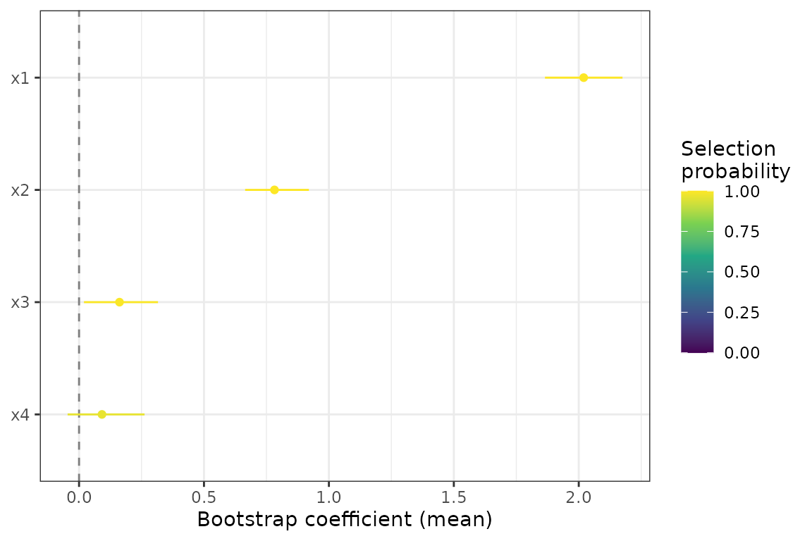
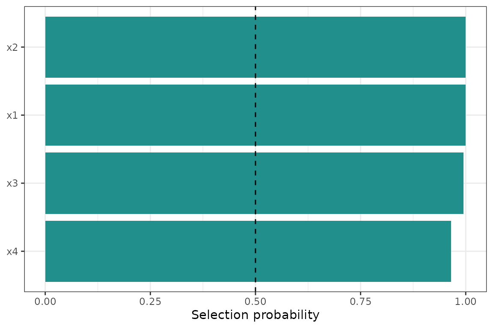

Upgrading from v0.1? Column names in
tidy()output changed in v0.2.0:estimate→mean,conf.low/conf.high→q025/q975,std.error→sd. Theconf.levelargument is nowprobs = c(0.025, 0.975). Uselb_filter_stable()instead oflb_is_significant(). Seevignette("migration-to-v020")for the full API rename table, andvignette("methodological-foundations")for the v0.2.0 conceptual framing.
What this package does
lassoboot answers the question: which of my
predictors actually matter, given that I measured them with known
instrument uncertainty?
Standard lasso regression assumes predictors are measured exactly. In practice, every sensor, balance, and test method introduces noise. When that noise is substantial relative to the predictor range — a 4 % coefficient of variation on a concrete strength test, a 0.07 wt % standard deviation on an XRF alumina measurement — it inflates uncertainty in the coefficient estimates and can cause predictors to be selected or dropped inconsistently across replicates.
lassoboot propagates declared measurement uncertainties
through a parametric bootstrap: in each of B iterations the
predictors are perturbed by their declared noise, the response is
regenerated from the fitted model, and lasso is refit. The result is a
selection probability (fraction of iterations a
predictor is retained) and a stability score (max
selection probability across the regularization path), both of which are
more informative than a single regularized point estimate.
A four-predictor example
We will use a small synthetic dataset to illustrate the workflow
before introducing the bundled concrete data.
set.seed(101)
n <- 80
df <- data.frame(
x1 = rnorm(n), # strong signal
x2 = rnorm(n), # moderate signal
x3 = rnorm(n), # noise
x4 = rnorm(n) # noise
)
df$y <- 2 * df$x1 + 0.8 * df$x2 + rnorm(n, sd = 0.6)Step 1: lb_spec() — declare the model
spec <- suppressMessages(
lb_spec(
y ~ x1 + x2 + x3 + x4,
data = df,
uncertainty = lb_uncertainty(
x1 = std(0.10), # absolute SD of 0.10 units
x2 = cov(5.0) # 5 % coefficient of variation
)
)
)
spec
#> <lb_spec>
#> formula: y ~ x1 + x2 + x3 + x4
#> data: 80 rows x 5 columns
#> uncertainty: 2 column(s): x1, x2
#> derive: none
#> constraints: 4 column(s)
#> engine: lb_engine_glmnet
#> control: <lb_control: all defaults>lb_spec() validates the formula, checks that every
uncertainty term exists as a numeric column, infers non-negativity
constraints where appropriate, and stores everything needed for the
bootstrap. No fitting happens yet.
Step 2: lb_bootstrap() — run the parametric
bootstrap
boot <- withr::with_seed(42, lb_bootstrap(spec, B = 200))
boot
#> <lb_spec>
#> formula: y ~ x1 + x2 + x3 + x4
#> data: 80 rows x 5 columns
#> uncertainty: 2 column(s): x1, x2
#> derive: none
#> constraints: 4 column(s)
#> engine: lb_engine_glmnet
#> control: <lb_control: all defaults>
#> <lb_fit>
#> lambda: 0.004985
#> sigma_hat: 0.6104 (method: refit)
#> <lb_boot>
#> B: 200 iterations
#> elapsed: 1.8s
#> path stored: TRUE
#> models kept: FALSEWith B = 200 this takes a few seconds. Production
analyses typically use B = 1000 or more. The seed is set
via withr::with_seed() so the global RNG state is not
modified.
Step 3: tidy() — read the results
library(dplyr)
#>
#> Attaching package: 'dplyr'
#> The following objects are masked from 'package:stats':
#>
#> filter, lag
#> The following objects are masked from 'package:base':
#>
#> intersect, setdiff, setequal, union
td <- tidy(boot)
td
#> # A tibble: 4 × 9
#> term mean median sd q025 q975 selection_prob n_selected
#> <chr> <dbl> <dbl> <dbl> <dbl> <dbl> <dbl> <int>
#> 1 x1 2.02 2.02 0.0794 1.86 2.18 1 200
#> 2 x2 0.782 0.775 0.0709 0.665 0.920 1 200
#> 3 x3 0.162 0.164 0.0832 0.0197 0.316 0.995 199
#> 4 x4 0.0917 0.0884 0.0833 -0.0458 0.262 0.965 193
#> # ℹ 1 more variable: stability_score <dbl>Each row is one predictor. The key columns:
| Column | Meaning |
|---|---|
mean |
Bootstrap mean coefficient (zeros included for unselected iterations) |
q025 / q975
|
Bootstrap quantile interval (default 2.5 % and 97.5 % quantiles) |
selection_prob |
Fraction of B iterations in which this term was selected |
stability_score |
Max selection probability across the lambda path |
x1 and x2 should have high selection
probabilities; x3 and x4 should be near
zero.
Step 4: autoplot() — visualize
autoplot(boot)
The color encodes selection probability. Terms towards the right with dark color are robustly selected with positive effects.
autoplot(boot, type = "selection")
The dashed line at 0.5 is the conventional “majority selection” threshold. Terms above it are selected in more than half of bootstrap iterations.
Filtering stable terms
lb_filter_stable(tidy(boot), min_selection_prob = 0.5)
#> [1] TRUE TRUE TRUE TRUElb_filter_stable() filters a tidy() data
frame to rows meeting one or more stability criteria. Pass
min_selection_prob, min_stability_score, or
quantiles_exclude_zero = TRUE in any combination. The full
set of criteria is discussed in
vignette("interpreting-results").
The concrete dataset
The package ships a 75-row dataset of limestone calcined clay cement (LC3) mortar cube strength measurements:
dplyr::glimpse(concrete)
#> Rows: 75
#> Columns: 10
#> $ mixture <int> 1, 1, 1, 2, 2, 2, 3, 3, 3, 4, 4, 4, 5, 5, 5, 6, 6, 6, 7, …
#> $ clay <fct> CC0, CC0, CC0, CC0, CC0, CC0, CC0, CC0, CC0, CC0, CC0, CC…
#> $ replacement <dbl> 10, 10, 10, 25, 25, 25, 15, 15, 15, 30, 30, 30, 20, 20, 2…
#> $ clayHOH <dbl> 669.1, 669.9, 670.5, 670.3, 669.5, 669.3, 668.4, 669.4, 6…
#> $ alumina <dbl> 39.47, 39.57, 39.50, 39.55, 39.51, 39.50, 39.41, 39.48, 3…
#> $ SSA <dbl> 22.14, 22.17, 22.09, 22.11, 22.10, 22.09, 22.30, 22.19, 2…
#> $ D50 <dbl> 2.83, 2.79, 2.77, 2.82, 2.85, 2.75, 2.82, 2.86, 2.84, 2.9…
#> $ strength_MPa <dbl> 42.2, 49.1, 53.9, 40.2, 50.7, 57.6, 43.7, 52.5, 53.9, 38.…
#> $ age <fct> 7d, 28d, 56d, 7d, 28d, 56d, 7d, 28d, 56d, 7d, 28d, 56d, 7…
#> $ wcm <dbl> 0.485, 0.485, 0.485, 0.485, 0.485, 0.485, 0.485, 0.485, 0…
uncertainty_concrete
#> # A tibble: 5 × 4
#> term type value source
#> <chr> <chr> <dbl> <chr>
#> 1 clayHOH std 3.2 ASTM C1897 §X3, single-operator reproducibility
#> 2 alumina std 0.07 ASTM C114 §7.3, method precision
#> 3 SSA cov 5.5 Manufacturer certificate of analysis
#> 4 D50 cov 4 Laser diffraction, repeat measurement CV
#> 5 strength_MPa cov 3 ASTM C109 §10.3, single-operator precisionThe companion uncertainty_concrete tibble declares
ASTM-sourced measurement uncertainties for each continuous predictor.
Passing it to lb_spec() is all that is needed to activate
uncertainty propagation for those columns.
A full worked example on the concrete data appears in
vignette("interpreting-results"). The methodology behind
measurement uncertainty propagation and the choice of sigma method is
covered in vignette("measurement-uncertainty").
Next steps
-
vignette("measurement-uncertainty")— the three uncertainty types, derived quantities, normalization, and howsigma_methodaffects prediction-band width. -
vignette("interpreting-results")— selection probability vs. CI vs. stability score, correlated predictors, prediction grids, and nested cross-validation. -
?lb_control— all tuning parameters with defaults and rationale. -
?lb_folds_grouped— group-aware cross-validation to prevent mixture leakage across folds.